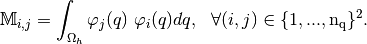
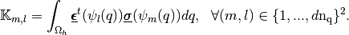

Welcome to pyOptFEM’s documentation!¶
pyOptFEM is a Python module which aims at measuring and comparing the performance of three programming techniques for assembling finite element matrices in 2D and 3D. For each of the matrices studied, three assembly versions are available: base, OptV1 and OptV2
Three matrices are currently implemented (more details are given in FEM2D module and FEM3D module) :
Mass matrix :

Stiffness matrix :

Elastic stiffness matrix :

where
 is the space dimension.
is the space dimension.
Contents:
Quick testing¶
To test the pyOptFEM library, you can run validation tests runValids() or some benchmarks (see runBenchs())
Testing and Working¶
- Ubuntu 12.04 LTS (x86_64) with
- python3.3
- python3.2
- Works on Windows 7 64 bits (???)
Requirements¶
pyOptFEM works with python3.3.
How to install python3.3.2?
A description of how to compile/install python3.3 under Ubuntu 12.04 LTS (x86_64) is given on François Cuvelier’s website, (section Python in the left menu) and repeated here.
Note
How to install python3.3.2
wget http://www.python.org/ftp/python/3.3.2/Python-3.3.2.tar.bz2
tar jxvf ./Python-3.3.2.tar.bz2
cd Python-3.3.2
./configure --prefix=/opt/python3.3.2
make
sudo make install
As a result, python is installed in /opt/python3.3.2 directory.
For pyOptFEM, you need some python modules. To install them you need easy_install which can be installed like this.
Note
How to install setuptools module
wget --check-certificate https://pypi.python.org/packages/source/s/setuptools/setuptools-1.1.4.tar.gz
tar zxvf setuptools-1.1.4.tar.gz
cd setuptools-1.1.4
sudo /opt/python3.3.2/bin/python3 setup.py install
For pyOptFEM, you need numpy, scipy, sympy and matplotlib. (For matplotlib, the package libfreetype6-dev may be necessary!)
Note
How to install scientific computation modules : numpy, scipy, sympy, matplotlib
sudo /opt/python3.3.2/bin/easy_install numpy
sudo /opt/python3.3.2/bin/easy_install scipy
sudo /opt/python3.3.2/bin/easy_install sympy
sudo /opt/python3.3.2/bin/easy_install matplotlib
Installation¶
Note
To install pyOptFEM as root, you should run the following command:
/opt/python3.3.2/bin/python3 setup.py install
Note
To install pyOptFEM as a single user, you should run the following command:
/opt/python3.3.2/bin/python3 setup.py install --user
License issues¶
pyOptFEM is published under the terms of the GNU General Public License.
pyOptFEM is free software: you can redistribute it and/or modify it under the terms of the GNU General Public License as published by the Free Software Foundation, either version 3 of the License, or (at your option) any later version.
pyOptFEM is distributed in the hope that it will be useful, but WITHOUT ANY WARRANTY; without even the implied warranty of MERCHANTABILITY or FITNESS FOR A PARTICULAR PURPOSE. See the GNU General Public License for more details.
You should have received a copy of the GNU General Public License along with this program. If not, see http://www.gnu.org/licenses/.
Software using source files of this project or significant parts of it, should include the following attribution notice:
- --------------------------------------------------------------------
ATTRIBUTION NOTICE: This product includes software developed for the pyOptFEM project at (C) University Paris XIII, Galilee Institute, LAGA, France.
pyOptFEM is a python software package for P_1-Lagrange Finite Element Methods in 3D. The project is maintained by F. Cuvelier, C. Japhet and G. Scarella. For Online Documentation and Download we refer to
--------------------------------------------------------------------